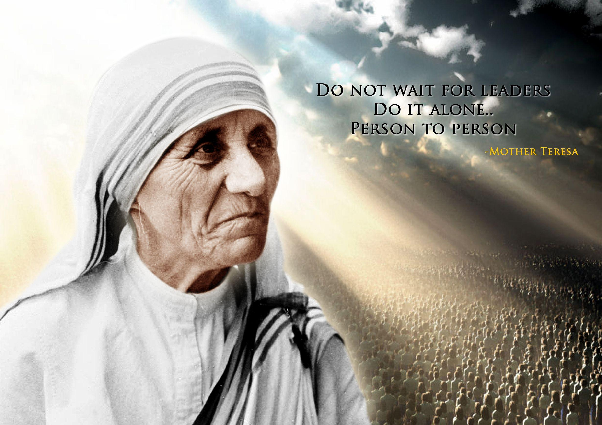

MOTHER TERESA
NOT ALL OF US CAN DO GREAT THINGS. BUT WE CAN DO SMALL THINGS WITH GREAT LOVE.
-MOTHER TERESA

- Mary Teresa Bojaxhiu better known as Mother Teresa, was an Albanian-Indian Catholic nun and the founder of the Missionaries of Charity.
- She was born on 26th of August,1910.
- On 10 September 1946, Teresa experienced what she later described as "the call within the call" when she travelled by train to the Loreto convent in Darjeeling from Calcutta for her annual retreat.
- She received the Padma Shri in 1962 and the Jawaharlal Nehru Award for International Understanding in 1969.
- She later received other Indian awards, including the Bharat Ratna (India's highest civilian award) in 1980.
- In 1979, Mother Teresa received the Nobel Peace Prize "for work undertaken in the struggle to overcome poverty and distress, which also constitutes a threat to peace".
- Mother Teresa's official biography, by Navin Chawla, was published in 1992.
- Mother Teresa received the Ramon Magsaysay Award for Peace and International Understanding, given for work in South or East Asia, in 1962.
- Mother Teresa said, "By blood, I am Albanian. By citizenship, an Indian. By faith, I am a Catholic nun. As to my calling, I belong to the world. As to my heart, I belong entirely to the Heart of Jesus."
- She began missionary work with the poor in 1948, replacing her traditional Loreto habit with a simple, white cotton sari with a blue border.
For more information
chechout
Mother Teresa
on wikipedia
develeped by @Geetika